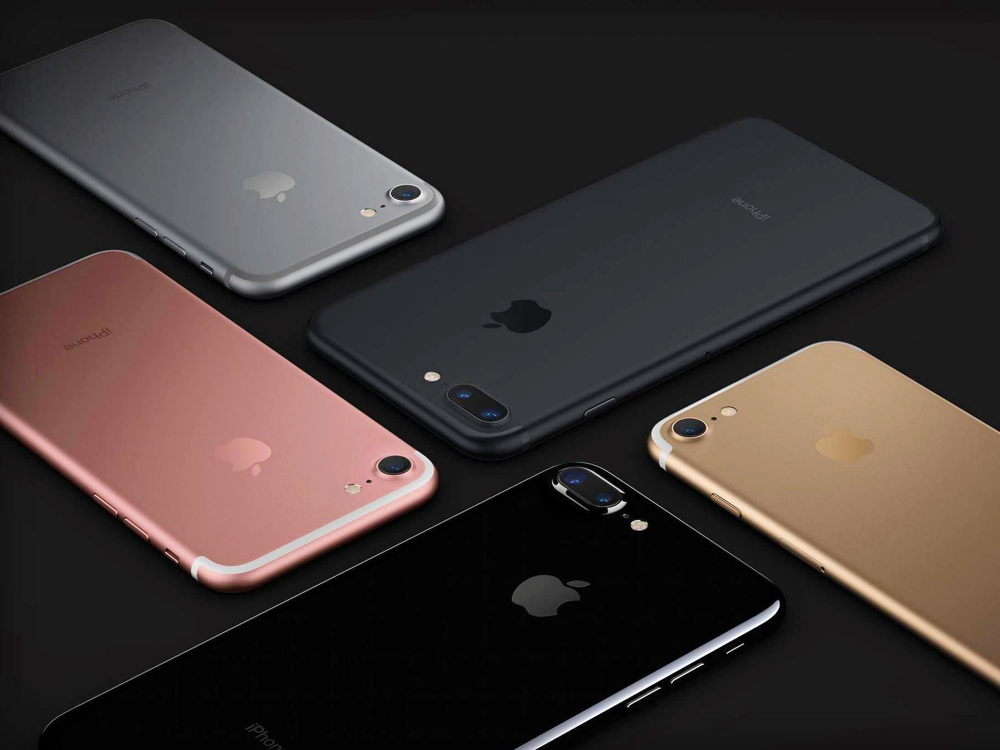

Iphone 7

Introducing Iphone 7
-
About :The iPhone 7 and iPhone 7 Plus are smartphones designed, developed, and marketed by Apple Inc. They were announced on September 7, 2016, at the Bill Graham Civic Auditorium in San Francisco by Apple CEO Tim Cook, and released on September 16, 2016, succeeding the iPhone 6S and iPhone 6S Plus as the current flagship devices in the iPhone series. Apple also released the iPhone 7 and 7 Plus in numerous worldwide countries throughout September and October 2016.
The iPhone 7's overall design is similar to the iPhone 6S, but introduces new color options, water and dust resistance, a new capacitive, static home key, and the removal of the 3.5 mm headphone jack. The device's internal hardware also received upgrades, including a heterogeneous quad-core system-on-chip with improved system and graphics performance, and upgraded 12 megapixel rear-facing cameras with optical image stabilization on all models and an additional telephoto lens on the iPhone 7 Plus model to provide enhanced zoom capabilities.
- Hardware : The iPhone 7's exterior is similar in shape and volume to iPhone 6 and iPhone 6S, though with a "mirrored" finish option. Alongside the existing silver, gold, and rose gold colors, the device is offered in new matte black and "jet black" colors. The "jet black" color is a dark shade, high-gloss black finish. It is created through a multi-step process, beginning with an anodization phase to make the surface of the casing a porous aluminum oxide, and then using a machine to sweep the casing through a powdered compound, absorbed by aluminum oxide. The process is concluded with an "ultra-fine particle bath" for additional finishing; the entire process takes less than an hour.IPhone 7 is rated IP67 water and dust resistant,[18] although tests have resulted in malfunctions, specifically distorted speakers, after water exposure.
- Software :IPhone 7 ships with iOS 10 pre-installed.The iPhone 7 Plus received an exclusive portrait camera mode in the iOS 10.1 software update.This camera mode is capable of producing a bokeh effect using depth of field analysis.
Accessories:Each iPhone 7 comes with a Lightning-to-3.5-mm adapter. Apple sells the adapter independently as well.Apple also unveiled several Bluetooth wireless headphones ostensibly intended for use with iPhone 7, including AirPods, wireless in-ear headphones, and three new Beats headphone products. All four products utilize an in-house wireless chip known as Apple W1, which is designed to provide low-power Bluetooth operation and integration with iOS and macOS products (though they are still compatible with other Bluetooth-supported devices).